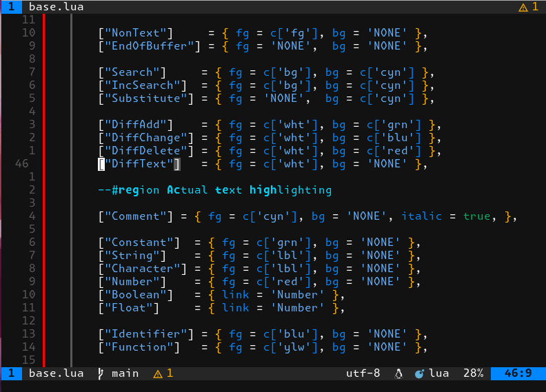

argonoct-neovim
A colorscheme for Neovim derived from the Argonaut TextMate theme, with Noctis-like syntax highlighting.
This project came about as I liked the Argonaut colorway, but was unhappy with the offerings already in the wild. I also wanted more control over some of the individual parts of the scheme, and wanted to add support for addons such as lualine and treesitter. While looking around for how to do this, an update for the wonderful Flexoki colorway by Steph Ango came out. I really liked how they had set-up the scheme, so after some time figuring out how it all worked and further time banging my head against a text editor, here we are.
GitHub repository